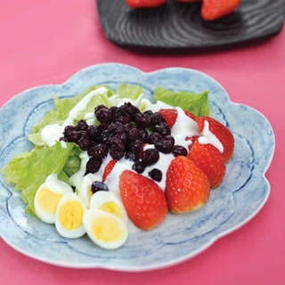
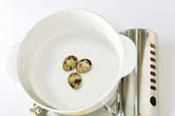
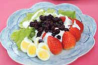

반찬
스트로베리 샐러드

재료
- 딸기 70g(7개)
- 플레인요거트 85g(1개)
- 양상추 70g(2장)
- 메추리알 30g(3개)
- 블루베리 15g(1큰술)
- 식초 약간
- 소금 약간
조리 순서
-
1
찬물이 담긴 냄비에 식초, 소금을 넣고 메추리알을 삶는다. 물이 끓어오르면 5분 정도 더 삶아 찬물에 헹군 후 껍질을 벗기고 반으로 자른다.
-
2
딸기를 흐르는 물에 가볍게 씻어 꼭지를 제거한 후 물기를 빼고 반으로 자른다.
-
3
양상추는 찬물에 담갔다가 물기를 빼고 한입 크기로 찢은 후 접시에 양상추, 딸기, 블루베리, 메추리알을 담고 플레인요거트를 끼얹는다.